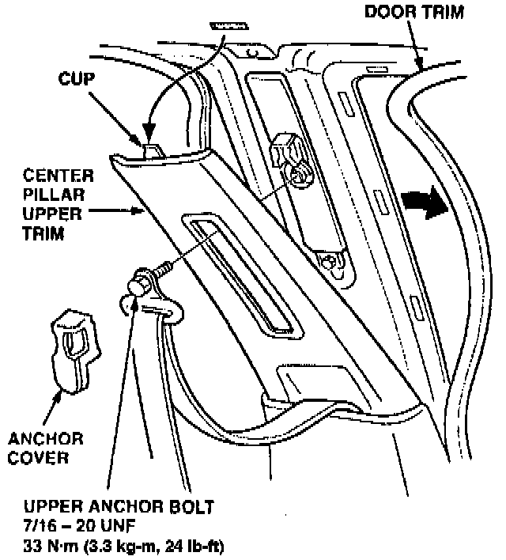
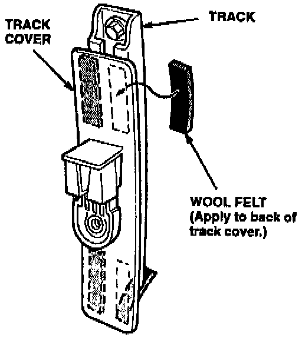

Seat Belt Shoulder Anchor - Buzzing Noise
December 20, 1994YEAR
1993-95
MODEL
LEGEND SEDAN
VIN APPLICATION
ALL
BULLETIN NO.
94-020
Buzzing From the Seat Belt Shoulder Anchor
SYMPTOM
A buzzing noise coming from the upper part of the B pillar when driving on rough roads.
PROBABLE CAUSE
The plastic cover on the seat belt shoulder anchor is contacting the seat belt track.
CORRECTIVE ACTION
Cushion the seat belt track cover with wool felt (see REQUIRED MATERIALS).
1. Remove the front and rear door trim along the upper half of the B pillar.
2. Remove the anchor cover and the seat belt anchor bolt.
Interior Upper Pillar Assembly:

3. Pull the top of the B pillar upper trim away from the body so you can access the seat belt track cover. You do not need to completely remove the trim piece.
Seat Belt Track:

4. Cut four 6 mm wide pieces of wool felt. Apply them to the track cover between the cover and the track.
5. Reinstall all removed parts.
REQUIRED MATERIALS
Wool felt: P/N 06993-SA5-000
WARRANTY CLAIM INFORMATION
In warranty:
The normal warranty applies.
Out of warranty:
Any repair performed after warranty expiration may be eligible for goodwill consideration by the District Technical Manager or your Zone Office. You must request consideration, and get a decision, before starting work.
Operation number: 854205 - Left side
864205 - Right side
Flat rate time: 0.4 hour per side
Failed P/N: 81460-SP0-004ZA
Defect code: 043
Contention code: B07